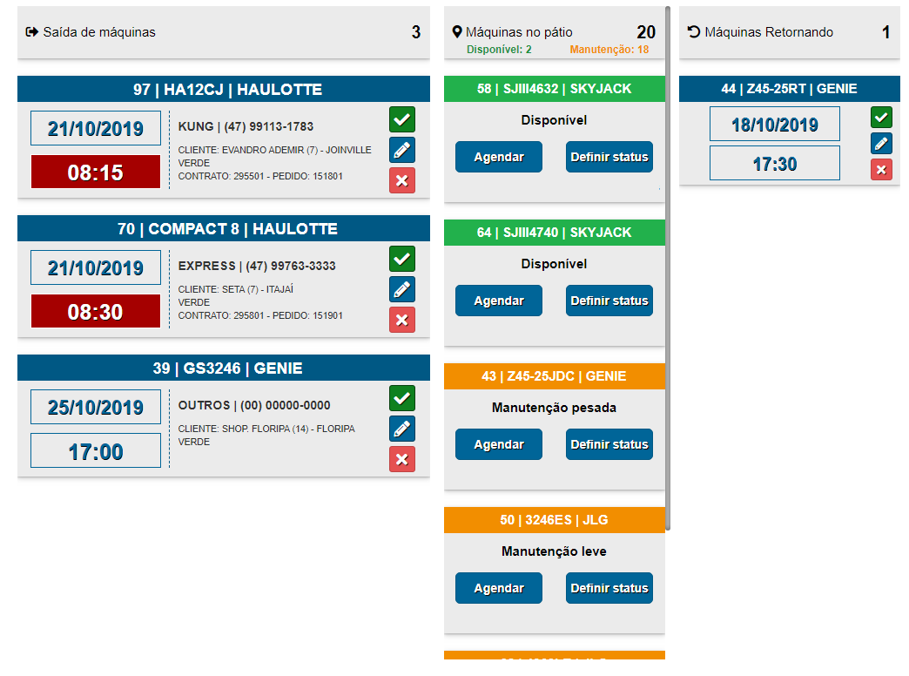
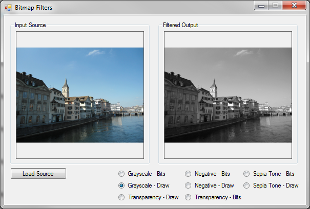
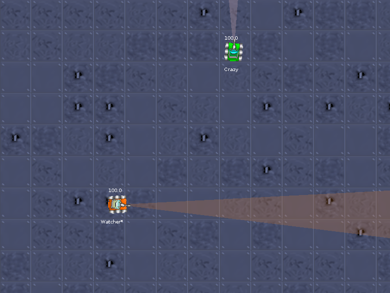
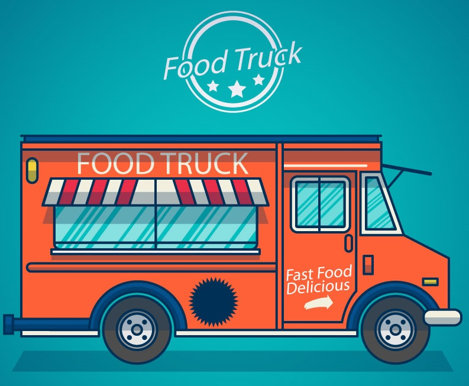

Olá!
Eu sou o Eduardo, desenvolvedor de alguns projetos pessoais desde 2016 e desde 2018 desenvolvedor na SoftRental.
Atualmete cursando Sistemas para Internet na Universidade do Vale do Itajaí e cursei Sistemas de Informação na Unisociesc (2017-2020) em Joinville.
Gosto bastante de fazer uns códigos utilizando HTML, CSS, JavaScript e PHP da forma mais pura.
Apesar dos projetos abaixo serem metade feitos em C#, não sou muito fã dessa linguagem :)
Esses são alguns projetos públicos que serviu de aprendizado e evolução como programador.
Projetos
Projetos pessoais
ACESSAR GITHUB

Controle de máquinas 2020WEB
Um sistema básico para o controle de máquinas. Através dele é feito o gerenciamento de entradas e saídas de máquinas do pátio da empresa.
ACESSAR GITHUB
BOT para Discord 2020JavaScript
Brincando com um BOT para servidor do Discord, com opções de música, memes e outras funcionalidades.
ACESSAR GITHUB
Patronum 2019WEB
Um sistema para o gerenciamento de patrimônios de empresas. Controle total de patrimônios internos e externos.
ACESSAR GITHUB

Filtro de imagens 2019C#
Um aplicativo básico para aplicar alguns tipos de filtros em imagens.
ACESSAR GITHUB

Robô virtual 2018C#
Desenvolvimento de um robô (robocode) para a participação de um torneio de batalhas de robôs virtual.
Colocação no torneio: 2º lugar.
Colocação no torneio: 2º lugar.
ACESSAR GITHUB

Food Truck 2018C#
Um sistema básico para gerenciar um food truck. Exemplo: Realizar pedidos, controle de estoque e controle de caixa.